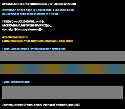

|
OpenSNES
Modern Open-Source SNES Development SDK
|
|
OpenSNES
Modern Open-Source SNES Development SDK
|

Port of krom (Peter Lemon)'s InterlaceFont demo (PeterLemon/SNES, PPU/Interlace/InterlaceFont). BG Mode 5 renders 512 horizontal pixels with 16×8 tiles; SETINI bit 0 adds screen interlace for 448 visible lines. This example lands the SDK's SETINI surface (videoSetInterlace/ObjInterlace/Overscan/PseudoHires, all composing through a write-only-register shadow) with a text page as the canonical hi-res payload — every glyph is 8 px wide, unrepresentable at 256.
The page is original art (gen_assets.py renders it and converts to Mode 5's paired-tile format; outputs committed so builds don't need Pillow). The 1-pixel stripe/checker bands are the acid test: at true 512 px they alternate every column — a 256-wide mode would alias them to flat gray.
Mode 5's 512 columns interleave the sub screen (even columns) and main screen (odd columns) — a period CRT blended adjacent columns into smooth strokes, while a modern LCD's crisp pixel grid shows them individually:
| Register | krom | this port |
|---|---|---|
| BGMODE | $0D (Mode 5, priority, 16×8) | same (setMode(BG_MODE5, 0x08)) — verified $0D in luna |
| SETINI | $01 | same (videoSetInterlace(1)) — verified $01 |
| TM / TS | $01 / $01 | same (setMainScreen+setSubScreen) — verified |
| BG1SC | map word $4000 | same (bgSetMapPtr), 32×64 (krom: 64×32 — his page is wider, ours taller) |
| BG12NBA | tiles word $8000 | same (bgSetGfxPtr) — verified |
luna renders hi-res/interlace CONTENT correctly but captures at 256×224 (≈2×2 downsample of the 512×448 field pair) — native-resolution capture is luna#115. The full 448-line page displays once with no vertical wrap (the 32×64 map fix — a 32-row map only covers 256 hi-res lines in interlace), and the 1-px bands render as the correct blend grays.
console, dma, background